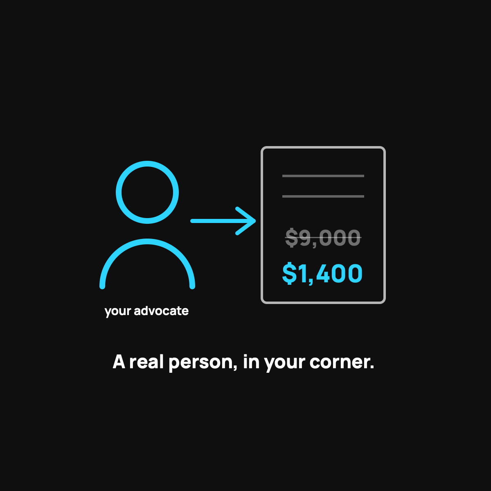

What a Care Advocate Actually Does
The human help you get with health sharing, and the part that surprised me most.
A care advocate is a real person, not a chatbot, whose whole job is to be on your side during a health event. They find fair-priced care, negotiate the bill down (members commonly see 25 to 85 percent off the list price), and handle the back-and-forth with the hospital so you don't have to. It's the part of health sharing that surprised me most.

When I tell people my family uses health sharing instead of insurance, the first worry is always the same. "So when something goes wrong, you're on your own with the hospital?" It's a fair worry. It's also backwards. With CrowdHealth, the service I use, you actually get more human help than we ever got from a big insurance plan, not less. That help has a name. It's called a care advocate.
The short version
A care advocate is a real person whose whole job is to be on your side when you're dealing with a health event. Not a chatbot. Not a phone tree that hangs up on you. A human you can reach who knows your situation and works your bills down before the crowd ever funds them.
Think of it like having a friend who happens to know exactly how hospital billing works, and who owes you a favor. That's the vibe.
What they actually do for you
Here's the stuff that happens behind the scenes when you have a health event:
- They find you fair-priced care. If you need a scan or a procedure, they help you find a place that won't charge triple for the same thing.
- They negotiate the bill down. This is the big one. Hospitals have a sticker price and a real price, and they're rarely the same number. Advocates ask for the cash price and push it lower. Members commonly see 25 to 85 percent knocked off the list price.
- They handle the back-and-forth. The phone calls, the itemized bills, the "we'll resubmit that" runaround. They do it so you don't have to.
- They walk you through the process. You always know what to do next, instead of guessing and hoping.
Why this matters more than it sounds
Here's the thing nobody tells you about regular insurance. When you get a scary bill, you're the one who has to fight it. You call the insurer, they point at the hospital, the hospital points back, and you're stuck in the middle holding the invoice. Nobody in that chain is paid to make your bill smaller.
A care advocate flips that. Now somebody whose actual job is shrinking your bill is doing the calling. I wrote about why insurance incentives work against you, and it's the whole reason this human-in-your-corner thing feels so different.
The honest limits
I'm not going to oversell it. An advocate is a person helping you, not a magic wand. They can't force a hospital to do anything, and because health sharing is not insurance, there's no legal guarantee on what gets funded. What they can do is get you better prices and take the fight off your plate, which is a lot. I laid out the full picture of who this model fits and who should skip it.
The takeaway
The scariest part of a big health event isn't just the money. It's feeling alone with it. A care advocate is the part of health sharing that surprised me most. We pay less and we have more actual help than we did before. That's a rare combination.
Questions I get about this
Do I get a care advocate with regular insurance?
Usually not. With insurance, when a scary bill lands you're the one who has to fight it. You call the insurer, they point at the hospital, the hospital points back, and you're stuck in the middle. Nobody in that chain is paid to make your bill smaller.
Can a care advocate guarantee my bill gets paid?
No. An advocate is a person helping you, not a magic wand. They can't force a hospital to do anything, and health sharing isn't insurance, so there's no legal guarantee on what gets funded. What they can do is get better prices and take the fight off your plate.
How do I reach my care advocate?
With CrowdHealth you can text, call, or email a real human who knows your situation. Spend twenty minutes in your first month learning how to submit a bill, so you know where the fire extinguisher is before there's a fire. More in the first 90 days.
Want to see how it works for your family? Use my code NORMAL: check out CrowdHealth (opens in a new tab). New members get their first 3 months at $99 a month with code NORMAL.
My family of four uses CrowdHealth and I really believe in the model. If you join through my discount link (opens in a new tab) (code NORMAL), you get your first 3 months at $99 a month, and Normaltown USA earns a referral bonus if you stick around. It costs you nothing extra, and I only refer you to things I would tell a friend about. Health sharing is not insurance, and nothing here is medical, tax, or financial advice.

Written by David Dewese
Normal guy with a full-time job, wife, and kids. Spent twenty years pursuing music and creative ventures before starting a family. Sharing tips and tricks on how to thrive while living on an artist's income. Not a financial advisor. More about me.
New here?
Normaltown USA is plain-English money and healthcare help for normal people, written by a regular guy with a family of four. No jargon, no hype. Start here, or read the FAQ.